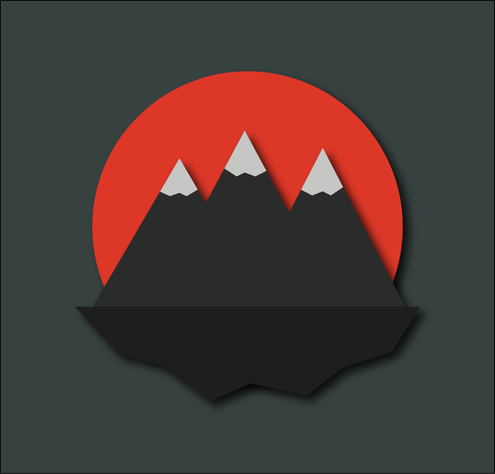
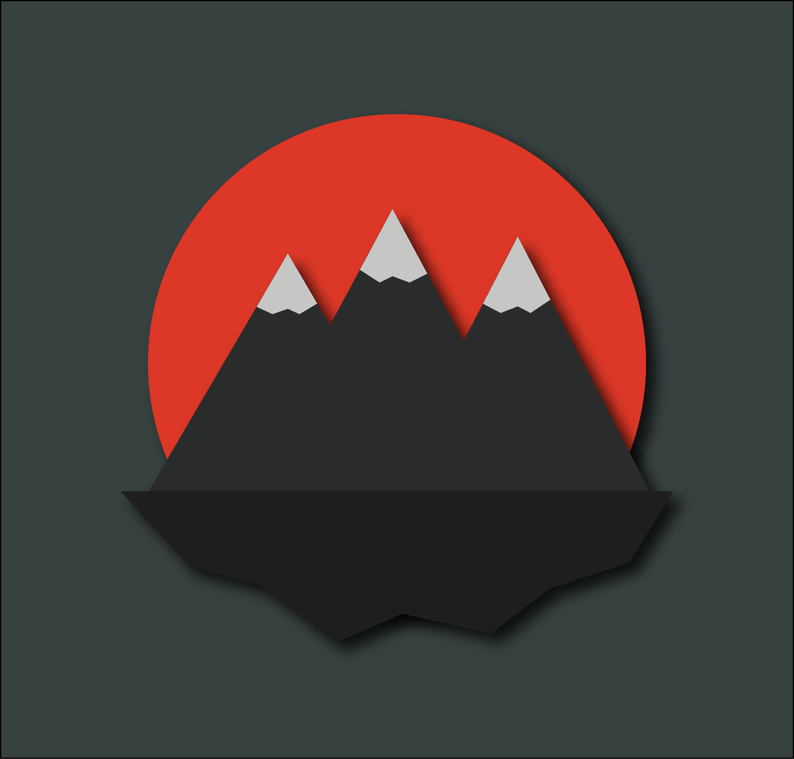

About Me
I'm a sophomore at UC Berkeley studying computer science. My passion is to express my creativity through the intersection of theory and design. Recently, I've been exploring my interests in machine learning, artifical intelligence, and computer vision.
I love to design and edit videos with Adobe products including Illustrator, After Effects, and InDesign.
When I'm not in class, I like to longboard, have dance parties, play cello, and practice competitive programming.


 
